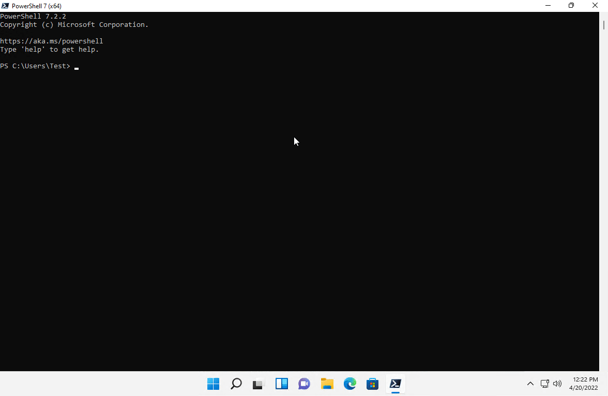
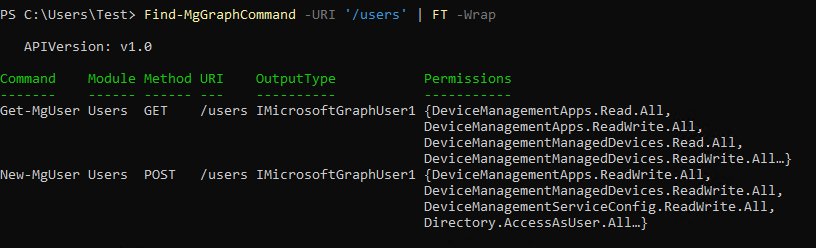

Working with the Microsoft Graph PowerShell SDK

What is an API anyway?
API stands for “Application Interface”. In simplest terms, APIs are services that bridge and allow two systems to interact. When we are talking about web services, such as those in M365, API usually refer to a REST API. I like this explanation from AWS:
API architecture is usually explained in terms of client and server. The application sending the request is called the client, and the application sending the response is called the server. So in the weather example, the bureau’s weather database is the server, and the mobile app is the client.
REST APIs are the most popular and flexible APIs found on the web today. The client sends requests to the server as data. The server uses this client input to execute internal functions and returns output data back to the client. Let’s look at REST APIs in more detail below.
REST supports the following operations, known as “Methods”
- GET - Just like it sounds, gets data from a resource
- POST - Post data, or create data
- PATCH - update a specific portion of data on a resource
- PUT - Like PATCH, updates but updates the entire resource (think replacment)
- DELETE - Self explanatory. Deletes data/resource
You may not be away, but all of the core services of Microsoft 365, Exchange Online, Azure AD, SharePoint, Intune, Defender for Endpoint etc., expose data through APIs. When you go into the O365 admin center and view a user account, the web browser is interacting with an API to pull that data and expose it to you. When you make a change to a user, group, setting, you are sending a request through an API to make that change.
What is the big deal about the Microsoft Graph?
When Office 365 was first introduced, every service had its own specific API. Microsoft introduced the Graph API in an effort consolodate resources. With Graph, data can be accessed from most services in O365 including Exchange, AzureAD, SharePoint/OneDrive, Security and Compliance etc.
According to Microsoft:
Microsoft Graph represents our best-in-breed API surface. It offers a single unified endpoint to access Azure AD services and Microsoft 365 services such as Microsoft Teams and Microsoft Intune. Microsoft Graph API’s usage has more than doubled that of Azure AD Graph, and in the past two years we have added 167 new features. All new functionalities will only be available through the Microsoft Graph.
Microsoft has made clear their intentions to get rid of the Azure AD API . That means the associated PowerShell modules (AzureAD / MSOL) will stop working. The replacement will for these is the Microsoft Graph PowerShell SDK.
Getting familiar with the Microsoft Graph
A good place to start is the Microsoft Graph Reference which lists in detail every endpoint in the API.
Before we connect to Graph, we first need to know what permissions we are going to need as we need to specify the permission scopes during the connection.
For example, if we look at listing users we see the following permission scopes listed :
| Permission type | Permissions (from least to most privileged) |
|---|---|
| Delegated | User.ReadBasic.All, User.Read.All, User.ReadWrite.All Directory.Read.All, Directory.ReadWrite.All |
| Application | User.Read.All, User.ReadWrite.All, Directory.Read.All, Directory.ReadWrite.All |
Delegated permissions are what we will use and are the permissions needed when authenticating with a user account. Application permissions are permissions assigned to an application in AzureAD.
We will use the List Users endpoint in the following example.
Getting started the Microsoft Grah PowerShell SDK
Installation
To get started, we first need to install the SDK. Installation is simple using Install-Module.
Install-Module Microsoft.Graph -forcerefresh
Connecting to Graph
Connect-MGGRaph -scopes 'User.Read.All'
Once connected, run Get-MGUser to get a list of all users in the directory
Ok great, so we listed out some users. But how the heck do you know what commands to run? Well good question. Unfortunately, the documentation for the PowerShell SDK is not very good. Most cmdlets have little to no actual useful documentation as to what they do. I believe this is because Microsoft is using an automated process to generate cmdlets that map directly to the REST API calls.
To find out what cmdlet maps to a particular endpoint, use Find-MGGraphCommand and specify the direct HTTP endpoint. For example:
Finding cmdlets
Find-MgGraphCommand -URI '/users'
Gives the following output :
We can see Get-MGUser and New-MGUser, the REST method the associated permission scopes needed.
If you would like to use cmdlets with the beta version of Graph, you can switch to beta using :
Select-MgProfile -Name "beta"
In the event you cannot find a corresponding cmdlet in the SDK, or the cmdlet doesnt work as expected (its happened to me more than once), you can use the catch-all generic cmdlet Invoke-MGGraphRequest
$Users = Invoke-MGGraphRequest -method GET -uri "v1.0\users"
$User.Value
When using Invoke-MGGraphRequest, we get the raw data from Graph and need to expand the “value” property. We also need to specify which version of Graph we wish to query, v1.0 or beta.
Lets look at an example of sending a PATCH request to Graph to set the password policy on a user account :
# Specify the User Principal Name for the user
$UPN = 'AdeleV@x745w.onmicrosoft.com'
# Get the user GUID
$userID = (Get-MGUser -userid $UPN).id
# Create the body paramater for the PATCH request with a hash table
$body = @{"PasswordPolicies" = "DisablePasswordExpiration"}
# Send the PATCH request to update the password policy
Invoke-MGGraphRequest -method PATCH -uri "v1.0\users\$userid" -body $body
#Confirm the password policy updated
Invoke-MGGraphRequest -method GET -uri "v1.0\users\$userid`?`$select=PasswordPolicies"
With the above PATCH request example, we are updating just the password policy on the user account for AdeleV@x745w.onmicrosoft.com
When you are finished, don’t forget to disconnect with Disconnect-MGGraph
Hopefully this is enough to get you started using the Microsoft Graph S PowerShell SDK. Stayed tuned, I will provide some sample scripts to help furhter your journey down the graph.